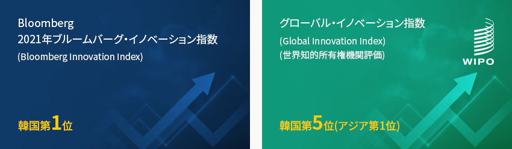
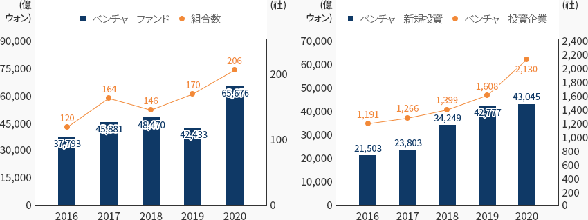
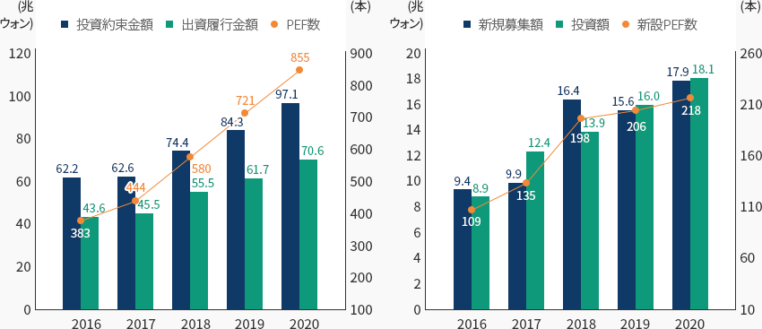
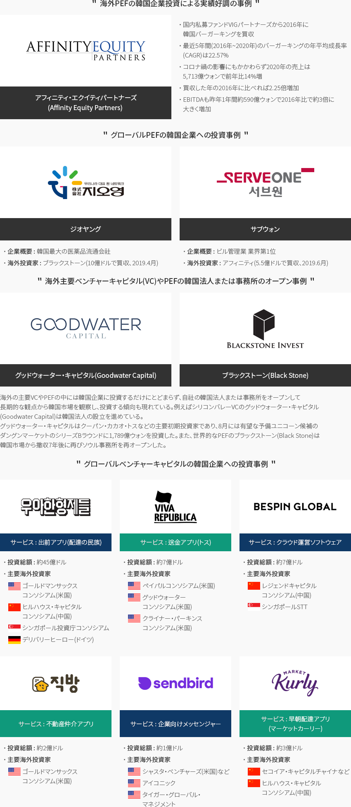

金融
- Home
- Why KOREA
- 産業
- 金融
金融
Financial Service
-
韓国の革新生態系 魅力的な投資先として浮上 コンテンツを閉じる韓国の革新生態系 魅力的な投資先として浮上ベンチャーキャピタルの組成と投資はこの数年連続で最高値を更新しており、2020年のコロナ禍の中でも
ベンチャー投資は非常に活発に行われている。適切な投資収益を産み出そうとする民間の努力と、ベンチャー企業を
韓国経済の成長と雇用創出の動力にしたいという政府の意志が相まって韓国のベンチャー生態系は
持続的に成長し、成熟している。特に、2021年、韓国はブルームバーグ・イノベーション指数(Bloomberg Innovation Index)で第1位、グローバル・イノベーション指数
(Global Innovation Index、世界知的所有権機関(WIPO)評価)で第5位(アジア第1位)となるなど、さまざまなイノベーション評価でここ数年間上位を占めている。
このように、韓国は革新生態系がしっかりと造成されている国で、 非常に魅力的な投資先だといえる- Bloomberg 2021年ブルームバーグ・イノベーション指数(Bloomberg Innovation Index) - 韓国第1位
- グローバル・イノベーション指数(Global Innovation Index)(세계지식재산기구평가) - 韓国第5位(アジア第1位)
 最近、経営参加型のPEF(Buyout PEF)もPEF設立数、投資額ともに最高値を更新し、着実に成長している。企業価値上昇後の上場、
最近、経営参加型のPEF(Buyout PEF)もPEF設立数、投資額ともに最高値を更新し、着実に成長している。企業価値上昇後の上場、
同種企業間の合併後の売却など、PEFは企業の買収合併分野でメインプレイヤーとしてその影響力を強めている。ベンチャー企業とベンチャーキャピタルの育成に対して政府の政策的な支援が引き続き行われており、
PEFへの規制緩和などの制度的改善も持続的に行われている。2021年8月、政府は「グローバル4大ベンチャー強国への飛躍」という政策を発表し、 2021年10月からはPEF制度が見直され、
PEFの資産運用規制が緩和されるなどベンチャーキャピタル及びPEFの投資環境は改善されつつある。 -
ベンチャーキャピタルの組成とベンチャー投資、持続的に最高値を更新 コンテンツを開くベンチャーキャピタルの組成とベンチャー投資、 持続的に最高値を更新2020年のコロナ禍の中でもベンチャーファンドの組成とベンチャーキャピタル投資は引き続き増加し、史上最高値を更新した。
2020年のベンチャーファンド組成実績は2019年比で約54.8%増えた6兆5,676億ウォン、そして新規組合数は
史上最多の206件となった。これは以前の最大実績の2018年4兆8,470億ウォンを更新した
記録であると同時に初めて6兆ウォンという大台を突破した記録である。2020年のベンチャー企業への投資は前年に比べて増加率は小さいものの、史上最高値を更新し4兆3,045億ウォンを記録した。
2020年のベンチャー投資は前年比0.6%増加し、2019年の増加率24.9%に比べて増加のスピードは鈍化したが、投資件数(4,231件)と
被投資企業数(2,130社)はそれぞれ初めて約4千件、約2千社を超え、史上最多となった。ベンチャーファンド結成実績 区分, 年 区分 2016 2017 2018 2019 2020 ベンチャーファン 37,793 45,881 48,470 42,433 65,676 組合数 120 164 146 170 206 ベンチャーファンド結成実績 区分, 年 区分 2016 2017 2018 2019 2020 ベンチャー新規投資 21,503 23,803 34,249 42,777 43,045 ベンチャー投資企業 1,191 1,266 1,399 1,608 2,130
※ 資料 : 中小ベンチャー企業部ベンチャー投資を業種別にみると、コロナ禍により注目されたバイオ・医療、情報通信技術(ICT)分野、素材・部品・装備関連業種
(電気・機械・装備、化学・素材、ICT製造)などの6業種が2020年ベンチャー投資の増加をけん引した。一方、コロナ禍によって
関連産業が全般的に被害を受けた流通·サービス、映像・公演・音楽は2019年比で投資が減少した。「業種別のベンチャー投資 2019年と2020年の比較」(単位: 億ウォン、%)업종業種別のベンチャー投資 2019年と2020年の比較 増加業種, 減少業種, 増加率(%), 年 増加業種 ‘19年 ‘20年 増加率(%) 減少業種 ‘19年 ‘20年 増加率(%) バイオ・医療 11,033 11,970 8.5 流通·サービス 8,145 7,242 -11.1 電気・機械・装備 2,036 2,738 34.5 化学・素材 1,211 1,765 45.7 映像・公演・音楽 3,703 2,902 -21.6 ICT製造 1,493 1,869 25.2 ICTサービス 10,446 10,764 3.0 その他 3,518 2,546 -27.6 ゲーム 1,192 1,249 4.8 ※ 資料: 中小ベンチャー企業部(単位 : 十億ドル、社)創業投資会社(投資組合)の現況及び投資実績 区分, 年度(2010 ~ 2018年) 区分 創業投資会社 投資 組合 組合数 設定額 投資 新規投資金額 会社数 ※ 出所 : 韓国ベンチャーキャピタル協会
※ 注：投資組合には創業投資組合と韓国ベンチャー投資組合が含まれます。
※ 注：組合は年度別の新規結成組合を対象に算出し、算出時点によって異なることがあります。 -
経営参加型PEFの設立と 投資の持続的な成長 コンテンツを開く経営参加型PEFの設立と 投資の持続的な成長一方、2020年末基準で経営参加型PEF(プライベートエクイティファンド)は計855本で、前年比134本増加した。投資家がPEFに出資を
約定した金額(出資約束金額)は97.1兆ウォンで前年の84.3兆ウォン比で15.2%増加し、投資家がPEFに出資を履行した金額(出資履行金額)は
70.6兆ウォンで前年の61.7兆ウォン比で12.6%増加した。2020年の新設PEF数は計218本で、前年(206本)比で12本増加し、2020年のPEF新規資金募集額(新設PEFの出資約束金額)は
17.9兆ウォンで前年(15.6兆ウォン)比2.3兆ウォン増加した。2020年のPEF投資執行規模は18.1兆ウォンで前年(16兆ウォン)比2.1兆ウォン
増加した。2020年には国内外の565社に対してPEF投資が行われたが、そのうち国内企業が488社(割合86.4%)でほとんどが国内企業への
投資だと言える。投資額基準では国内投資は12.6兆ウォン、海外投資は5.5兆ウォンとなっている。「PEF数と出資約束金額·出資履行金額の推移及び新設PEFと募集額·投資額の推移」PEF数と出資約束金額·出資履行金額の推移及 区分, 年度 区分 2016 2017 2018 2019 2020 投資約束金額 62.2 62.6 74.4 84.3 97.1 出資履行金額 43.6 45.5 55.4 61.7 70.6 PEF数 383 444 580 721 855 新設PEFと募集額·投資額の推移 区分, 年度 区分 2016 2017 2018 2019 2020 新規募集額 9.4 9.9 16.4 15.6 17.9 投資額 8.9 12.4 13.9 16.0 18.1 新設PEF数 109 135 198 206 218
※ 資料 : 金融監督院 -
第4次産業革命時代の到来と 市場配慮型企業構造調整の必要性の増大 コンテンツを開く第4次産業革命時代の到来と 市場配慮型企業構造調整の必要性の増大韓国のベンチャーキャピタルの規模はここ数年連続で最高値を更新し、第2のベンチャー好況期と呼ばれるほど非常に活発に
投資が行われている。 特に第4次産業革命関連の新産業の浮上で産業構造が再編される構造的な変化は新しいチャンスを
生み出しており、第4次産業革命関連のベンチャー企業を今後の韓国経済の主力企業として育成しようとする政策的な意志も強い。経営参加型のPEF(Buyout PEF)も着実に成長しており、今後、景気低迷が
長期化すれば、むしろPEFには投資のチャンスが多くなるものと予想される。
特に過去に比べて韓国企業が構造調整を積極的に推進する傾向が強くなってきたため、
景気低迷期に優良投資先が増え、これによってPEFの投資収益性も改善する見通しだ。
-
海外ベンチャーキャピタル(VC)の韓国のベンチャー企業への投資活性化 コンテンツを開く海外ベンチャーキャピタル(VC)の 韓国のベンチャー企業への投資活性化グローバルベンチャー投資機関(PEF、VC、Accelerator)の韓国企業への投資は非常に活発に行われており、
今後成功事例が蓄積されればベンチャー生態系はより成熟し、市場のダイナミズムも向上するものと期待される。
最近のベンチャー企業のグローバル・ベンチャーファンド投資誘致の主要事例は下記の通りである。韓国のベンチャー企業への投資活性化 企業名, 主要状況 企業名 主要状況 医療AI専門データラベリング企業のイングラディエント(Ingradient)は2021年7月にイスラエル初のVCのヨズマグループ(YozmaGroup) ビジョンクリエイターから14億ウォンのプレシリーズAラウンドの投資を誘致した。 投資機関はイングラディエントが開発した医療AIデータラベリングソリューションのメディラベル(MediLabel)の技術力と未来ビジョンを高く評価している。 韓国最大の旅行・レジャープラットフォーム企業のヤノルジャは2021年7月に世界最大のベンチャー 投資ファンドのビジョンファンド(SoftBank's Vision Fund)から17億ドル(約1兆9,400億ウォン)を誘致した。ヤノルジャはクラウド基盤の客室予約管理システム分野を育成し、 単なる宿泊予約会社ではなくITサービス企業として収益構造を多角化している。 
ユーザー参加型ストーリーコンテンツプラットフォームを開発するスタートアップのテイルバースは2021年10月にシンガポールVCのガレナベンチャーズ(GarenaVentures)から200万ドル(約23億ウォン)規模のシード(seed)ラウンド投資を誘致した。 テイルバースは既存のウェブ小説、ウェブトゥーンの限界を克服し、華やかなビジュアルと動的なモーションを備えていながらもアニメーションよりはるかに安い制作費で誰でも簡単に作れるストーリーコンテンツプラットフォームの開発を進めている。 
AI企業のマークビジョン(MarqVision)は2021年4月に世界最大のスタートアップアクセラレーターのYコンビネーター (YCombinator)をはじめとして韓国投資機関のベースインベストメント、ダナル投資パートナーズから36億ウォンの投資を誘致した。 マークビジョンはアマゾン、クーパン、アリババ、タオバオなど23か国の約60に上るe-commerceサイト及び各種のSNSで流通する偽物(イミテーション)を摘発し、 削除、通報までを自動で行うAI偽造品モニタリングサービスを提供している。 ロボットスタートアップのベアロボティクス(BearRobotics)は2020年1月にソフトバンクの主導で韓国のロッテアクセラレーター、スマイルゲート、 DSCインベストメントなどからロボットスタートアップ業界の最高水準であるシリーズAラウンド投資、3,200万ドル(約371億ウォン)を誘致した。 ベアロボティクスは自動運転基盤ロボットのサービ(Servi)を開発し、外食産業市場のサービス革新を主導している。 海外PEFの韓国企業投資による実績好調の事例 アフィニティ・エクイティパートナーズ(Affinity Equity Partners)- 国内私募ファンドVIGパートナーズから2016年に韓国バーガーキングを買収
- 最近5年間(2016年~2020年)のバーガーキングの年平均成長率(CAGR)は22.57%
- コロナ禍の影響にもかかわらず2020年の売上は5,713億ウォンで前年比14%増
- 買収した年の2016年に比べれば2.25倍増加
- EBITDAも昨年1年間約590億ウォンで2016年比で約3倍に大きく増加
グローバルPEFの韓国企業への投資事例-
ジオヤング
- 企業概要 : 韓国最大の医薬品流通会社
- 海外投資家 : ブラックストーン(10億ドルで買収、2019.4月)
-
サブウォン
- 企業概要 : ビル管理業 業界第1位
- 海外投資家 : アフィニティ(5.5億ドルで買収、2019.6月)
海外主要ベンチャーキャピタル(VC)やPEFの韓国法人または事務所のオープン事例- グッドウォーター・キャピタル(Goodwater Capital)
- ブラックストーン(Black Stone)
グローバルベンチャーキャピタルの韓国企業への投資事例-
サービス : 出前アプリ(配達の民族)
- 投資総額 : 約 45億ドル
- 主要海外投資家 : ゴールドマンサックスコンソシアム(米国) ヒルハウス・キャピタルコンソシアム(中国) シンガポール投資庁コンソシアム デリバリーヒーロー(ドイツ)
-
サービス : 送金アプリ(トス)
- 投資総額 : 約 7億ドル
- 主要海外投資家 : ペイパルコンソシアム(米国) グッドウォーターコンソシアム(米国) クライナー・パーキンスコンソシアム(米国)
-
サービス : クラウド運営ソフトウェア
- 投資総額 : 約 2億ドル
- 主要海外投資家 : レジェンドキャピタルコンソシアム(中国) シンガポールSTT
-
サービス : 不動産仲介アプリ
- 投資総額 : 約 2億ドル
- 主要海外投資家 : 골드만삭스 컨소시엄(미국)
-
サービス : 企業向けメッセンジャー
- 投資総額 : 約 1億ドル
- 主要海外投資家 : シャスタ・ベンチャーズ(米国)など
-
サービス : 早朝配達アプリ(マーケットカーリー)
- 投資総額 : 約 3億ドル
- 主要海外投資家 : セコイア・キャピタルチャイナなどヒルハウス・キャピタルコンソシアム
※ 資料 : 朝鮮ビズ(2018.3)、IT朝鮮(2019.9)、mergemarket資料を再編集 -
ベンチャー投資及びベンチャー企業 成長促進政策とPEF制度の見直し コンテンツを開くベンチャー投資及びベンチャー企業 成長促進政策とPEF制度の見直し2020年2月、「ベンチャー投資促進に関する法律(以下、「ベンチャー投資法」)が制定され、同年7月から施行中である。
ベンチャー投資法を通じて複数の法律に分散していたベンチャー投資制度を統合して一貫性のあるベンチャー投資生態系を造成し、
民間のベンチャーキャピタル投資と個人のエンジェル投資を促進するなど規制が緩和された。例えば、
有望なスタートアップなどを発掘して 初期の投資金を供給・インキュベーションするアクセラレーター(創業企画者)にも、専門人材、
資本金などの一定条件を満たせば ベンチャー投資組合(投資ファンド)の組成を許容した。また、ファンド設立の最低出資金も約30億ウォンから20億ウォンに下げる規制緩和を行った。2021年8月、政府は「グローバル4大ベンチャー強国への飛躍に向けたベンチャー補完対策」を発表し、多様なベンチャー企業の育成と
ベンチャー投資促進政策を推進する意志を明確にした。例えば、ベンチャー企業が幅広くストックオプションを発行・利用できるようにする
ための付与対象など発行条件の緩和、ベンチャー企業の海外投資誘致・海外進出を支援するグローバルベンチャー
ファンド・海外ベンチャーキャピタルネットワーキングの拡大・推進、海外資本の流入・責任の強化に向けたシリコンバレー型
ベンチャーファンドガバナンスの導入、企業の買収資金調達のための技術革新買収合併(M&A)保証の新設、
買収合併ファンドの拡大などの流動性供給など、さまざまな政策的イニシアチブを推進する旨を明らかにした。創業企画者登録及び投資金額 年度(2017 ~ 2020年) 2017 2018 2019 2020 創業企画者投資金額(ウォン) 16,300,000,000 65,800,000,000 159,600,000,000 225,300,000,000 創業企画者投資金額(ドル) 14,414,063.88 59,801,872.22 137,193,549.50 193,669,841.49 創業企画者投資金額(百万ドル) 14 60 137 194 ※ 出所 : 中小ベンチャー企業部
※ 作成協力 : 韓国経済研究院


Invest KOREA